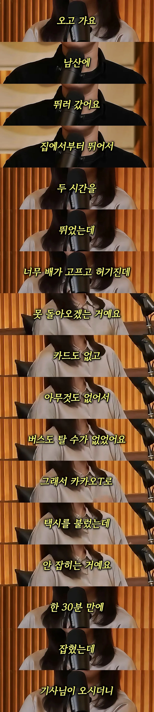
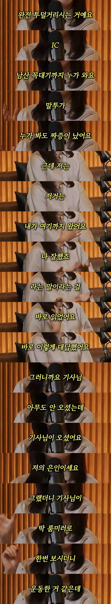
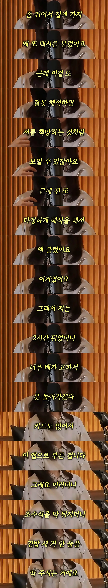
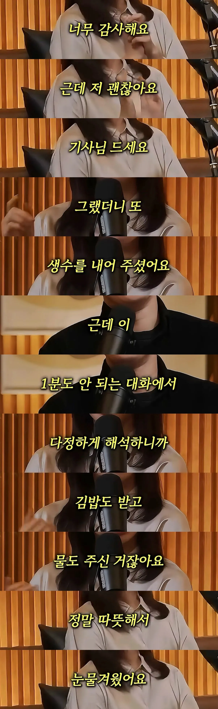

콜 받는거 거절할수있지않나 왜 짜증을 내지 ㅋㅋㅋ
받고 나서 거절하면 감점요소 있다던데?
저거 콜 이미 몇 번 거절하면 안됨 ㅋㅋ
거의뭐 태극권이네
아저씨 툴툴 거린게 미안했는가보네.
다정한 해석... 정말로 도움 많이 될 것 같다; 현명하네...
나는 틀렸어
면전에서 조목조목 따진 뒤 쭉 갈구고 내려서도 가능한 한 최대의 패널티를 먹여서 후회막심하게 만들어주지 않으면 개운하지가 않아
틀린게 아니라 다른거지 걍 사람의 유형이 다른거임 너같은 파이터 유형이 필요하고 도움되는 상황이 있고 반대로 본문 같은 유형이 손해보고 상처받는 상황도 있는거임
진짜 커뮤충들 저런 거 본받아야 한다ㅋㅋㅋㅋ 말 한마디로 빚 천냥 갚는다는 말이 괜히 있는게 아님
츤츤
와 태극권 존나잘하네… 나도 저렇개 생각을 좀 해야되는데
대단하다 저런 순발력이 있어야 하는데... 내 뇌는 저장용량만 큰 HDD임.. ㅆㅂ.. 기억은 잘하는데 속도가 ㅈ같이 느려
버럭!거리는거는 의외로 의도 케치가 편하긴 하지.
물론 난 캐치한다고 해서 저렇게 유하게 풀어주진 않겠지만
해봐 재밋음